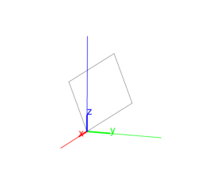
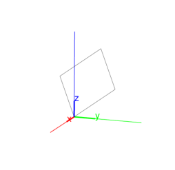

13.8.3 Rectangles in space: rectangle
See section 12.9.3 for rectangles in the plane.
The rectangle command returns and draws a
rectangle. It takes as arguments one of the following:
-
Three points, A, B and P.
rectangle(A,B,P) returns and draws the rectangle
ABCD.
The first two points A and B are vertices of the
rectangle, the third point P determines the plane and
orientation of the rectangle. The orientation is so that angle
BAP is positive. The length of side AD equals the
length of AP.
Input:
A := point(0,0,0); B := point(3,3,3);
P := point(0,0,3)
then:
rectangle(A,B,P)
Output:

- Two points, A and B, and a list consisting
of a point P and a real number k.
rectangle(A,B,[P,k]) returns and draws the rectangle
ABCD. The first two points A and B are vertices of the
rectangle, the third point P determines the plane and
orientation of the rectangle as above. The length of AD
is |k| times the length of AB. Angle BAD
has the same orientation as BAP if k is positive,
angle BAD has opposite orientation as BAP if
k is negative.
Input:
rectangle(A,B,[P,1/2])
Output:

rectangle takes optional fourth and fifth arguments,
which are variables assigned to vertices C and D.
Input:
rectangle(A,B,P,C,D)
then:
simplify(coordinates(C)), simplify(coordinates(D))
Output:
[-(sqrt(6))/2,-(sqrt(6))/2,sqrt(6)],
[(-(sqrt(6))+6)/2,(-(sqrt(6))+6)/2,sqrt(6)+3]